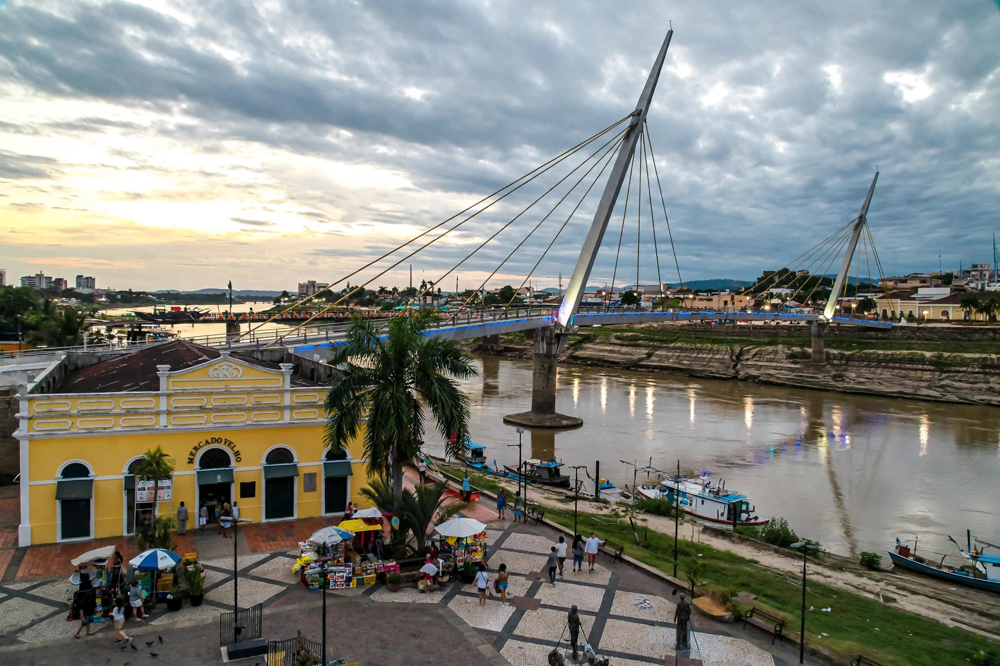

Rio Branco, Acre
Rio Branco is the capital of the Brazilian state of Acre, in the far west of the Amazon region, on the Acre River near the borders with Peru and Bolivia. It is named after the Baron of Rio Branco, the diplomat who secured Acre for Brazil by the Treaty of Petrópolis (1903).
| Country | Brazil |
|---|---|
| State | Acre |
| Founded | 28 December 1882 |
| Population | about 390,000 |
| Time zone | UTC−5 |

History
The settlement began in 1882 as a rubber-trading post founded by Neutel Maia during the Amazon rubber boom. Acre, then Bolivian territory claimed by Brazilian rubber tappers, was annexed by Brazil in 1903 after the Acre War, and Rio Branco became the territorial and later state capital.
Geography and climate
The city lies on both banks of the Acre River in lowland rainforest, with an equatorial climate — hot and humid, with a drier season from about May to October. Seasonal flooding of the Acre River periodically affects riverside districts.
Economy
Timber, Brazil nuts, açaí and cattle, plus cross-border trade and public services, support the economy. The Interoceanic Highway links Rio Branco to Peru's Pacific ports.